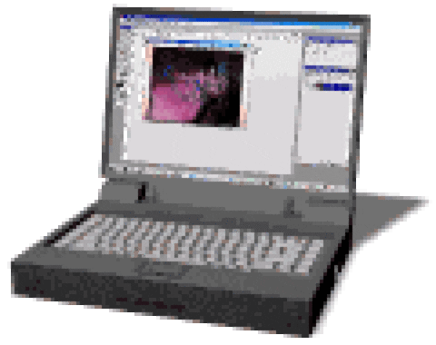

Обо мне

Я начинающий программист-разработчик интересующийся децентрализованными технологиями и виртуальной реальностью.
На данный момент я изучаю:
- Linux
- Python
- HTML, CSS, JavaScript (Разработка сайтов)
- Системное/Серверное администрирование
Кстати, я сделал этот сайт чтобы практиковаться.
Поэтому добавляйте сайт в закладки и следите за его изменениями!
Блог

Посты, блоги и проекты:
- Цензура и свобода слова (скоро)
Контакты
- example.email
- Профиль на GitHub